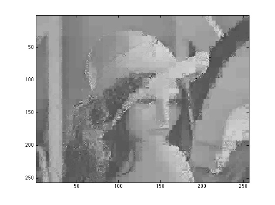

function []=IST()
clear all
close all
clc
I = double(imread('~/Desktop/not-used-frequently/pictures_for_project/len_std.jpg'));
I = mean(I, 3);
I = imresize(I, [256, 256]);
tic;
sz = size(I);
n = sz(1) * sz(2);
p = 0.3;
rp = randperm(n);
upper = floor(p*n);
its = 100;
l = 6;
y = I(rp(1:upper));
ys = zeros(sz);
ys(rp(1:upper)) = y;
xold = zeros(size(I));
xold1 = zeros(sz);
tn = 1;
for i=1:its
tn1 = (1 + sqrt(1 + 4*tn*tn))/2;
xold = xold + (tn-1)/tn1 * (xold - xold1);
t1 = idwt2_full(xold);
temp = t1(rp(1:upper));
temp2 = y - temp;
temp3 = zeros(size(xold));
temp3(rp(1:upper)) = temp2;
temp3 = dwt2_full(temp3);
temp4 = xold + temp3;
xold = temp4;
for j=1:sz(1)*sz(2)
if abs(xold(j)) < l
xold(j) = 0;
else
xold(j) = xold(j) - sign(xold(j))*l;
end
end
xold1 = xold;
xold = xold;
tn = tn1;
end
sprintf('\n')
toc;
imagesc(idwt2_full(xold)); colormap gray;
drawnow
end
function [xnew] = T(xold, y, rp, upper)
t1 = idwt2_full(xold);
temp = t1(rp(1:upper));
temp2 = y - temp;
temp3 = zeros(size(xold));
temp3(rp(1:upper)) = temp2;
temp3 = dwt2_full(temp3);
temp4 = xold + temp3;
xnew = temp4;
end
function [y] = dwt(x)
w = size(x);
w = max(w);
x = reshape(x, 1, w);
y = zeros([1 w]);
i = 1:w/2;
y(i) = (x(2*i-1) + x(2*i))/sqrt(2);
y(i + w/2) = (x(2*i-1) - x(2*i))/sqrt(2);
end
function [y]=idwt(x)
w = size(x);
x = reshape(x, 1, max(w));
w = size(x);
y = zeros(w);
w = w(2);
i = 1:w/2;
y(2*i-1) = (x(i) + x(i + w/2))/2;
y(2*i) = (x(i) - x(i + w/2))/2;
y = y * sqrt(2);
end
function [y] = dwt2(x)
l = size(x);
y = ones(l);
for i=1:l(1)
x(:,i) = dwt(x(:,i));
end
for i=1:l(2)
x(i,:) = dwt(x(i,:));
end
y = x;
end
function [y] = idwt2(x)
l = size(x);
sz = l;
for i=1:l(1)
row = 1:l(1);
x(:,i) = idwt(x(:,i));
end
for i=1:l(2)
row = l(2);
x(i,:) = idwt(x(i,:));
end
y = x;
end
function [y] = dwt2_full(x)
sz = size(x);
order = log2(sz(1));
for i=0:order-1
upper = bitshift(sz(1), -1*i);
y = x(1:upper, 1:upper);
y = dwt2(y);
x(1:upper, 1:upper) = y;
end
y = x;
end
function [y] = idwt2_full(x)
sz = size(x);
w = sz(1);
order = log2(sz(1));
for i=order:-1:1
y = x(1:bitshift(w,-i+1),1:bitshift(w,-i+1));
y = idwt2(y);
x(1:bitshift(w,-i+1),1:bitshift(w,-i+1)) = y;
end
end
ans =
Elapsed time is 27.573739 seconds.
